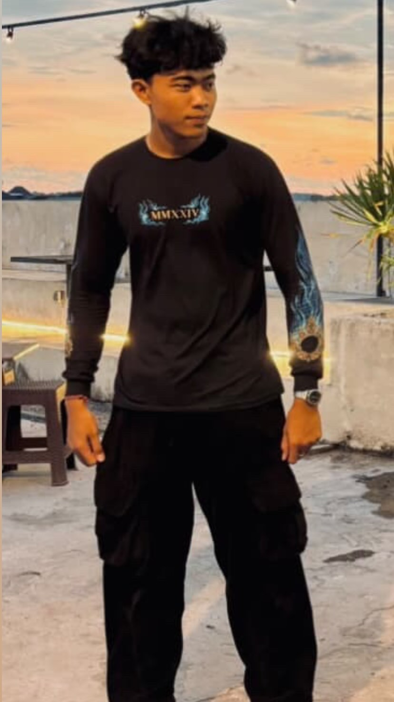
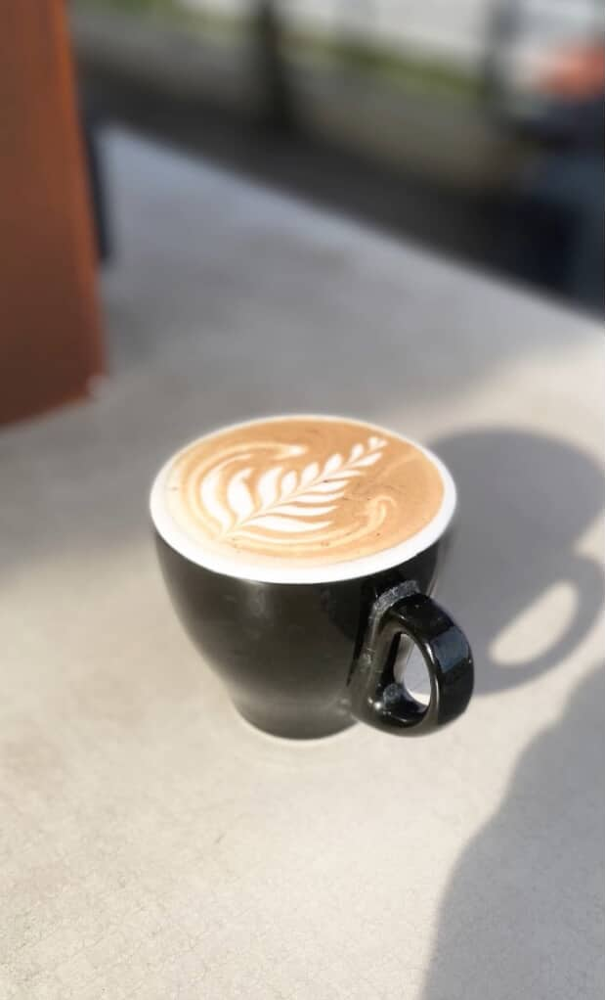
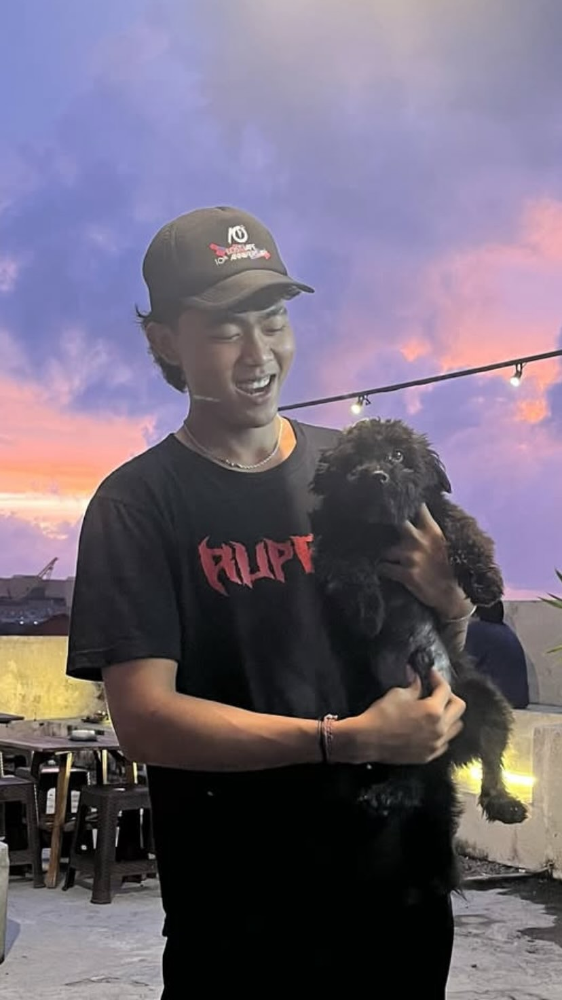

My Personal Portfolio



Aku adalah pribadi yang mudah bergaul dan cepat beradaptasi dalam lingkungan baru. Meski terkadang emosiku bisa meledak saat sesuatu tidak berjalan sesuai harapan, aku selalu berusaha untuk belajar mengelola perasaan agar tetap bisa menjadi pribadi yang hangat dan menyenangkan bagi orang di sekitarku.
Saya bekerja sebagai barista selama satu tahun di sebuah coffee shop lokal. Tugas saya meliputi menyajikan berbagai jenis minuman kopi, menjaga kebersihan area kerja, serta berinteraksi langsung dengan pelanggan untuk memberikan pelayanan terbaik.
Selama bekerja sebagai barista, saya mengembangkan skill dalam membuat latte art, mengenali berbagai jenis biji kopi, manajemen waktu, serta kemampuan komunikasi dan kerja sama tim.